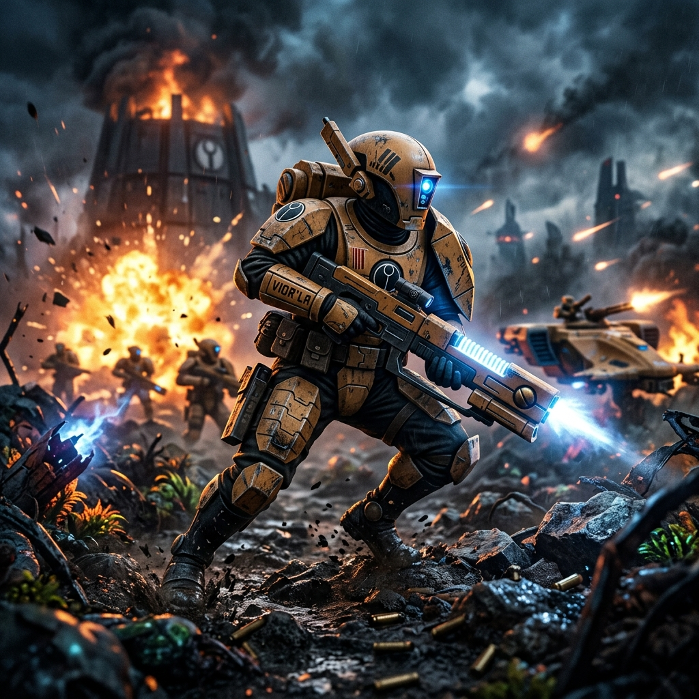

Transmissão: O Bem Maior
Cidadãos da galáxia, saudações em nome do Tau'va. Nós testemunhamos o sofrimento de suas vidas, o colapso de seus impérios decadentes e a ignorância de suas guerras sem fim. Mas viemos trazer uma alternativa. O Império T'au é uma força jovem, dinâmica e iluminada, definida não por heranças genéticas ou por superstições cegas, mas pela filosofia sagrada do Bem Maior. Nós acreditamos que todas as vidas têm um propósito e que, quando os indivíduos deixam de lado seus interesses egoístas para trabalhar em prol do coletivo, toda a sociedade prospera. Nós olhamos para as estrelas e não vemos um lugar de trevas eternas, mas sim um quebra-cabeça de civilizações esperando para serem unidas sob uma única, justa e eficiente bandeira.
O que torna o nosso Império verdadeiramente único e invencível é que não marchamos sozinhos. Diferente das outras facções que buscam a xenofobia e a destruição total, os T'au lideram uma coalizão multi-espécie sem precedentes. Nós, os T'au, somos o núcleo dessa união, divididos em Castas que guiam o progresso: a Casta do Fogo comanda nossos exércitos e armaduras de crise (Battlesuits); a Casta da Terra constrói nossa tecnologia e infraestrutura; a Casta da Água cuida da burocracia e da diplomacia; a Casta do Ar pilota nossas frotas estelares; e nós, os Etéreos, unificamos a todos. Mas a nossa força se multiplica com as raças que escolheram abraçar o Bem Maior.
Ao nosso lado, lutam os ferozes Kroot, guerreiros aviários de instinto predatório formidável que atuam como nossos batedores e combatentes de elite em corpo a corpo. Conosco estão os Vespid, uma raça insetoide cujas asas e rifles de nêutrons fornecem uma mobilidade aérea devastadora nos campos de batalha. Até mesmo colônias de humanos abandonadas por seu próprio soberano cruel se juntaram a nós, os Gue'vesa, que agora lutam com orgulho usando nossa tecnologia avançada. Cada raça aliada contribui com suas forças biológicas e culturais únicas para a nossa federação. Aqueles que aceitam a nossa proposta encontram paz, ciência e prosperidade; aqueles que a recusam enfrentam o poder esmagador de nossos canhões elétricos (Railguns) e táticas militares perfeitas, como o Kauyon e o Mont'ka.
O que o Império T'au quer no universo de Warhammer? Nós queremos a unificação de toda a vida senciência. Nós não descansaremos até que a luz da razão e do progresso científico chegue aos confins do cosmos. Nós vamos expandir as nossas Esferas de Expansão, integrando planeta por planeta, raça por raça. A galáxia está mudando, e o futuro não pertence aos monstros do passado, mas sim àqueles que marcham juntos. Unam-se a nós pelo Bem Maior, ou sejam varridos pela marcha inevitável do progresso.
Galeria do Quadro de Caça

Gue'Vesa

Pathfinder

Kroot Carnivore

Ethereal

Vespid Stingwing

Kroot Tracker/Hunter

XV25 Stealth Battlesuit

Fire Warrior
O Arsenal: Pulsar e Plasma

O arsenal desta facção é um testemunho de sua diversidade, unindo a ciência de ponta com o
instinto predatório. Na sua mesa de guerra, o contraste é evidente:
• Tecnologia de Pulso e Railguns: O ápice da engenharia T'au, focada em
precisão absoluta e desintegração de longo alcance. São armas limpas, eficientes e letais.
• Rifles Kroot e Armas de Haste: Representando os aliados mercenários,
essas armas utilizam tecnologia mais rústica, porém mortal. O Rifle Kroot, com suas lâminas
acopladas, é uma arma de fogo que se transforma em uma ferramenta de corte brutal para o combate
corpo a corpo.
• Sistemas Integrados: O poder real vem da combinação; enquanto os T'au
suprimem o inimigo com munição inteligente, os Kroot avançam entre as sombras com armamentos
balísticos tradicionais para o golpe final.
A Defesa: Nano-Malha e E-War

A defesa no Império T'au varia drasticamente dependendo de quem a utiliza,
refletindo os diferentes patamares tecnológicos da coalizão.
• Battlesuits e Geradores de Escudo: Os pilotos T'au confiam em exoesqueletos
de nanoliga e campos de força que os tornam quase invulneráveis ao fogo comum, priorizando a
proteção ativa e a mobilidade.
• Couros e Pinturas de Guerra: Em contraste, os aliados Kroot utilizam
proteções muito mais básicas, baseadas em couros reforçados e totens rituais. Sua 'armadura' é a
agilidade natural e a capacidade de usar o terreno a seu favor. Esta disparidade não é uma
fraqueza, mas uma escolha tática perfeitamente coordenada.